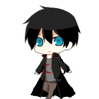

克羅斯．藍．捺佐：平常是黑髮藍瞳，處刑者時是紅色的瞳孔。因詛咒年齡停留在12歲，
不過他會把自己變成18歲的外貌(因為介意自己和焰的身高差)，真實年齡不詳。
最強的世界法則，強到連"法則殺不死"這個法則都能違反。
天空一族的非正式族長(因為天空一族已經滅族，並且藍並沒有自稱族長)，滅族原因是藍的母親
(當時最強的魔法師)，想要了結天空一族的"處刑者"們的悲劇，而一夜中將天空一族全殺了，
原本想將拆成兩半藍的靈魂給帶走中一半，然而因為藍早就知道自家母親的計畫而沒成功，
但藍還是很刻意地讓自己的母親把自己的靈魂拆成兩半，之後藍也將自己身上的情感撕成兩半分給了另一個自己。